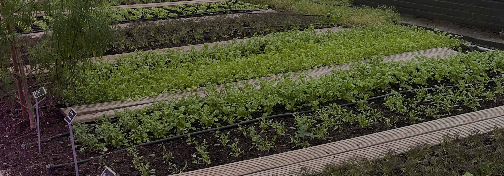
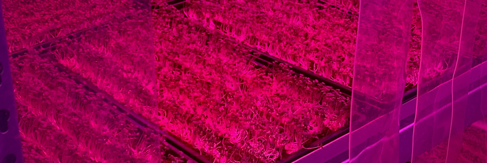
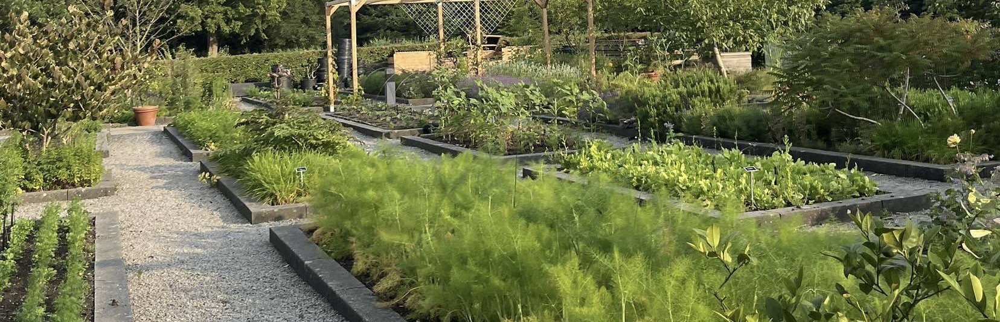

De Moestuin
Aan het restaurant ligt een tuin en een kweekkas die worden gebruikt om kruiden, eetbare bloemen te telen. Ook worden er planten en groentes opgekweekt om deze verder te laten groeien in hun tuin of in de akker die ze er bij hebben gekocht in de Beemster. Hierdoor is het mogelijk het hele jaar door waterkers, selderij, postelein en andere bladgroenten te oogsten.
In de Beemster hebben alle groentes zoals; tomaten, aubergines, aardappels, courgette, snijbonen, postelein, basilicum, snijbiet en peulvruchten de rust om verder te kunnen groeien na dat ze zijn over geplant van de kas in het Frankendael.
